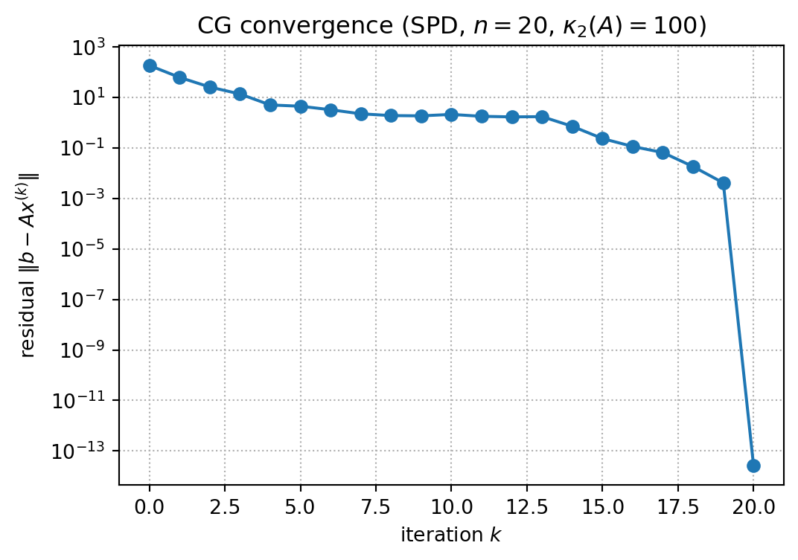
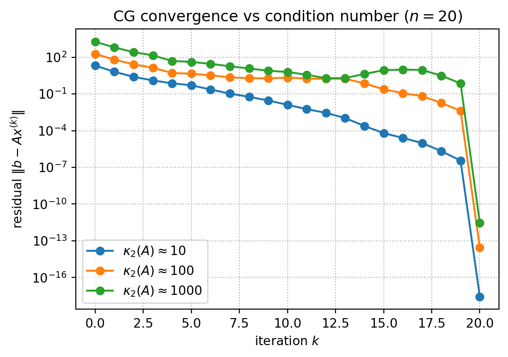

import numpy as np
from numpy import linalg as LA
def perturbation_demo(A, rng, eps=1e-8):
n = A.shape[0]
# Set the exact solution by hand:
# x = (1, 1, ..., 1)^T.
# Then define b from Ax = b, so we know the true answer in advance.
x_true = np.ones(n)
b = A @ x_true
# Add a very small relative perturbation to the right-hand side b.
# This models the situation where data or rounding errors slightly
# change the system from Ax = b to Ax = b + db.
db = eps * LA.norm(b) * rng.normal(size=n)
x_hat = LA.solve(A, b + db)
# rel_b measures the relative size of the perturbation in b:
# ||db|| / ||b||.
# rel_x measures the resulting relative error in the solution:
# ||x_hat - x_true|| / ||x_true||.
rel_b = LA.norm(db) / LA.norm(b)
rel_x = LA.norm(x_hat - x_true) / LA.norm(x_true)
return LA.cond(A), rel_b, rel_x, x_hat
# These matrices are 10x10 examples prepared for this experiment.
# They have very different condition numbers, so the same small
# perturbation in b produces very different errors in x.
matrices = {
"A1": np.loadtxt("data/A1.txt", delimiter=","),
"A2": np.loadtxt("data/A2.txt", delimiter=","),
"A3": np.loadtxt("data/A3.txt", delimiter=","),
}
rng = np.random.default_rng(2026)
np.set_printoptions(precision=3, suppress=False)
# Display the true solution first. The surprising point is that
# the computed solution can be far from this vector even though the
# right-hand side perturbation is tiny.
print("true solution x =", np.ones(10))
print()
for name, A in matrices.items():
cond_A, rel_b, rel_x, x_hat = perturbation_demo(A, rng)
print(f"{name}: cond(A)={cond_A:10.2e}, "
f"rel_b={rel_b:10.2e}, "
f"relative error in x={rel_x:10.2e}")
print("computed x =", x_hat)
print()Lectures 5–6 — Linear Systems and Iterative Methods
Handout: Foundations of and Exercises in Numerical Analysis
TipHow to use this handout — Evolving Study Notes with an AI Tutor
This handout is the shared main material for Lectures 5 and 6. The companion slides (5th.html and 6th.html) are only for class logistics and assignment instructions.
Like the previous handouts, this file is designed to grow with you. Whenever a line confuses you, ask the AI tutor and insert a Q&A block following AI_TUTOR.md.
For Exercise 5.0 or 6.0, copy this handout into the corresponding assignment repository and add your own Q&A blocks there.
Roadmap
This handout is split across two lectures:
| Session | Main topics |
|---|---|
| Lecture 5 | linear systems, conditioning, and an introduction to stationary iterative methods (Jacobi and Gauss-Seidel) |
| Lecture 6 | convergence analysis of stationary iterations, symmetric positive definite matrices, conjugate gradient method, and preconditioning |
1 Systems of Linear Equations
2 Direct and Iterative Methods
3 Conditioning of Linear Systems
Let \(A\) be nonsingular. The condition number of \(A\) with respect to a matrix norm is
\[ \operatorname{cond}(A) = \|A\|\,\|A^{-1}\|. \]
Because \(I=AA^{-1}\),
\[ 1=\|I\|=\|AA^{-1}\|\leq \|A\|\,\|A^{-1}\| =\operatorname{cond}(A), \]
so \(\operatorname{cond}(A)\geq 1\). The value depends on the norm being used, such as \(\ell^1\), \(\ell^2\), or \(\ell^\infty\).
TipDefinition: singular values
For a matrix \(A\in\mathbb{R}^{n\times n}\), the singular values \(\sigma_1\geq \sigma_2\geq \cdots \geq \sigma_n\geq 0\) are the nonnegative square roots of the eigenvalues of \(A^T A\):
\[ \sigma_i=\sqrt{\lambda_i(A^T A)}, \qquad i=1,2,\ldots,n. \]
Equivalently, they are the diagonal entries of \(\Sigma\) in the singular value decomposition
\[ A=U\Sigma V^T, \]
where \(U,V\) are orthogonal and \(\Sigma=\operatorname{diag}(\sigma_1,\ldots,\sigma_n)\).
The largest and smallest singular values are denoted
\[ \sigma_{\max}(A)=\sigma_1, \qquad \sigma_{\min}(A)=\sigma_n. \]
For symmetric positive definite \(A\), the singular values coincide with the eigenvalues.
NoteRemark: 2-norm condition number
For the 2-norm, the condition number can be written using singular values:
\[ \operatorname{cond}_2(A) = \|A\|_2\,\|A^{-1}\|_2 = \frac{\sigma_{\max}(A)}{\sigma_{\min}(A)}, \]
For the linear system \(Ax=b\), suppose \(b\) is perturbed to \(b+\Delta b\), and the solution changes from \(x\) to \(x+\Delta x\):
\[ A(x+\Delta x)=b+\Delta b. \]
Then
\[ A\Delta x=\Delta b, \qquad \Delta x=A^{-1}\Delta b. \]
Using matrix norms,
\[ \|\Delta x\| \leq \|A^{-1}\|\,\|\Delta b\|. \]
Also, since \(b=Ax\),
\[ \|b\|\leq \|A\|\,\|x\|. \]
Combining these estimates gives
\[ \frac{\|\Delta x\|}{\|x\|} \leq \operatorname{cond}(A) \frac{\|\Delta b\|}{\|b\|}. \]
A large condition number means that a small relative perturbation in \(b\) can cause a large relative perturbation in the solution.
NoteWhat the following code does
For each test matrix \(A\), we first choose the exact solution
\[ x_* = (1,1,\ldots,1)^T. \]
Then we define the right-hand side by
\[ b = Ax_*, \]
so the exact answer is known in advance. Next, we solve the perturbed system
\[ A\widehat{x} = b + \Delta b, \qquad \frac{\|\Delta b\|}{\|b\|}\approx 10^{-8}. \]
Finally, we compare the relative perturbation in \(b\) with the relative error in the computed solution:
\[ \texttt{rel\_b} = \frac{\|\Delta b\|}{\|b\|}, \qquad \texttt{rel\_x} = \frac{\|\widehat{x}-x_*\|}{\|x_*\|}. \]
The surprising point is that \(\widehat{x}\) can be far from \((1,1,\ldots,1)^T\) even when \(\Delta b\) is tiny.
Tip出力を表示
true solution x = [1. 1. 1. 1. 1. 1. 1. 1. 1. 1.]
A1: cond(A)= 4.49e+01, rel_b= 2.65e-08, relative error in x= 3.29e-07
computed x = [1. 1. 1. 1. 1. 1. 1. 1. 1. 1.]
A2: cond(A)= 1.00e+10, rel_b= 1.89e-08, relative error in x= 8.54e-01
computed x = [ 0.929 1.747 -0.353 1.01 2.143 1.479 0.505 0.36 -0.551 1.556]
A3: cond(A)= 3.59e+16, rel_b= 2.89e-08, relative error in x= 2.60e+09
computed x = [-7.878e+09 -2.330e+09 3.680e+08 2.750e+08 -4.145e+07 -1.111e+08
-1.231e+08 -1.021e+08 -3.704e+07 -7.111e+06]
4 Stationary Iterative Methods
We now study two classical stationary iterative methods for \(Ax=b\): Jacobi and Gauss-Seidel. Both start from a matrix splitting \(A=D+L+U\) and produce updates of the form \(x^{(k+1)}=g(x^{(k)})\), where \(g\) is an affine fixed-point map.
4.1 Matrix Splitting
For stationary iterative methods, write
\[ A = D+L+U, \]
where
- \(D\) is the diagonal part of \(A\),
- \(L\) is the strictly lower triangular part of \(A\),
- \(U\) is the strictly upper triangular part of \(A\).
Then
\[ Ax=b \]
becomes
\[ (D+L+U)x=b. \]
Different rearrangements of this equation lead to different iterative methods.
In the next two methods, the update will have the form
\[ x^{(k+1)} = g(x^{(k)}), \]
which is called a fixed-point iteration. Here, \(g\) is an affine map of the form \(g(x)=Mx+c\).
4.2 Jacobi Method
The Jacobi method rearranges
\[ Dx=-(L+U)x+b. \]
Starting from an initial guess \(x^{(0)}\), define
\[ x^{(k+1)} = D^{-1}\{b-(L+U)x^{(k)}\}. \]
Componentwise, this is
\[ x_i^{(k+1)} = \frac{1}{a_{ii}} \left( b_i-\sum_{j\ne i}a_{ij}x_j^{(k)} \right). \]
All components of the new vector are computed from the old vector.
4.3 Gauss-Seidel Method
The Gauss-Seidel method rearranges
\[ (D+L)x=-Ux+b. \]
Starting from \(x^{(0)}\), define
\[ x^{(k+1)} = (D+L)^{-1}(b-Ux^{(k)}). \]
Componentwise,
\[ x_i^{(k+1)} = \frac{1}{a_{ii}} \left( b_i -\sum_{j<i}a_{ij}x_j^{(k+1)} -\sum_{j>i}a_{ij}x_j^{(k)} \right). \]
The newest available values are used immediately.
4.4 Stopping Criterion
For a small tolerance \(\varepsilon>0\), a stationary iteration must be stopped in finite time. Two common criteria are based on the size of the update and the size of the residual.
NoteStopping criterion 1: relative update
Stop when successive approximations change little:
\[ \frac{\|x^{(k+1)}-x^{(k)}\|} {\|x^{(k)}\|} <\varepsilon. \]
This is easy to compute, but it can sometimes stop before the equation \(Ax=b\) is solved accurately enough.
NoteStopping criterion 2: relative residual
Stop when the residual is small compared with the right-hand side:
\[ \frac{\|Ax^{(k)}-b\|} {\|b\|} <\varepsilon. \]
This is more reliable, but it costs more because we must compute the residual \(Ax^{(k)}-b\).
4.5 Jacobi Implementation
import numpy as np
from numpy import linalg as LAdef jacobi(A, b, x0=None, tol=1e-10, max_iter=500):
A = np.asarray(A, dtype=float)
b = np.asarray(b, dtype=float)
n = len(b)
x = np.zeros(n) if x0 is None else np.asarray(x0, dtype=float).copy()
D = np.diag(A)
R = A - np.diagflat(D)
residuals = []
for k in range(max_iter):
x_new = (b - R @ x) / D
residual = LA.norm(b - A @ x_new)
residuals.append(residual)
if residual < tol:
return x_new, k + 1, np.array(residuals)
x = x_new
return x, max_iter, np.array(residuals)
import matplotlib.pyplot as plt
A_demo = np.array([
[10.0, -1.0, 2.0],
[-2.0, 10.0, -3.0],
[ 1.0, -5.0, 10.0],
])
x_true = np.ones(3)
b_demo = A_demo @ x_true
x_j, it_j, res_j = jacobi(A_demo, b_demo, tol=1e-10)
print("Jacobi solution :", x_j)
print("iterations :", it_j)
print("error vs true x :", LA.norm(x_j - x_true))
print("\nConvergence history (selected iterations)")
print(f"{'k':>4} | {'||b - A x_k||':>16}")
print("-" * 25)
sample = sorted(set([0, 1, 2, 5, 10, 20, len(res_j) - 1]))
for k in sample:
if 0 <= k < len(res_j):
print(f"{k:4d} | {res_j[k]:16.3e}")
plt.figure(figsize=(6, 4))
plt.semilogy(res_j, marker="o")
plt.xlabel("iteration $k$")
plt.ylabel(r"residual $\|b - A x^{(k)}\|$")
plt.title("Jacobi convergence")
plt.grid(True, which="both", linestyle=":")
plt.show()
TipClick to reveal the output
Jacobi solution : [1. 1. 1.]
iterations : 35
error vs true x : 3.609399953221805e-12
Convergence history (selected iterations)
k | ||b - A x_k||
-------------------------
0 | 4.295e+00
1 | 2.092e+00
2 | 7.625e-01
5 | 7.120e-02
10 | 1.677e-03
20 | 1.269e-06
34 | 5.368e-11
5 Convergence Analysis
We now use the fixed-point form introduced above to study convergence. Both Jacobi and Gauss-Seidel can be written as
\[ x^{(k+1)} = Mx^{(k)} + c. \]
If the sequence converges to \(x\), then the limit must satisfy \(x=Mx+c\).
For Jacobi,
\[ M_J=-D^{-1}(L+U), \qquad c_J=D^{-1}b. \]
For Gauss-Seidel,
\[ M_{GS}=-(D+L)^{-1}U, \qquad c_{GS}=(D+L)^{-1}b. \]
The central convergence criterion is stated using the following quantity.
NoteDefinition: spectral radius
The spectral radius of a matrix \(M\) is defined by
\[ \rho(M)=\max_i |\lambda_i|, \]
where \(\lambda_i\) are the eigenvalues of \(M\).
ImportantTheorem: fixed-point convergence criterion
For the fixed-point iteration
\[ x^{(k+1)}=Mx^{(k)}+c \]
the sequence converges to the unique fixed point for every starting vector \(x^{(0)}\) if and only if
\[ \rho(M)<1, \]
where \(\rho(M)\) is the spectral radius of \(M\).
TipCorollary: norm sufficient condition
If
\[ \|M\|<1 \]
for some induced matrix norm, then the fixed-point iteration converges. This follows from
\[ \rho(M)\leq \|M\|. \]
5.1 Strict Diagonal Dominance
NoteDefinition: strict diagonal dominance
A matrix \(A=(a_{ij})\) is strictly diagonally dominant if
\[ |a_{ii}| > \sum_{j\ne i}|a_{ij}| \qquad \text{for every } i. \]
ImportantTheorem: convergence guarantee
If \(A\) is strictly diagonally dominant, then both the Jacobi method and the Gauss-Seidel method converge to the solution of \(Ax=b\) for every initial vector \(x^{(0)}\).
For Jacobi, the proof is especially direct:
\[ \|M_J\|_\infty = \max_i \sum_{j\ne i} \left|\frac{a_{ij}}{a_{ii}}\right| < 1. \]
Thus \(\rho(M_J)\leq \|M_J\|_\infty<1\).
The Gauss-Seidel proof is a little more involved, but it uses the same idea: strict diagonal dominance makes the error iteration contract, so errors are not amplified from one step to the next.
NoteRemark: SPD matrices に対する Gauss-Seidel
\(A\) が symmetric positive definite (SPD) なら，Gauss-Seidel method も任意の initial vector \(x^{(0)}\) に対して収束します。SPD の定義は次のセクション冒頭を参照してください。
WarningRemark: normal equations
\(A\) が symmetric positive definite でないとき，normal equations
\[ A^T A x = A^T b. \]
を解こうとするかもしれません。これは matrix を symmetric にし，\(A\) が full column rank を持つとき positive definite にします。しかし，これは conditioning を大きく悪化させることがあります：
\[ \operatorname{cond}_2(A^T A)=\operatorname{cond}_2(A)^2. \]
したがって，normal equations は numerical computations では注意して使うべきです。
6 Conjugate Gradient Method（CG 法）
ここでは，stationary iterative methods から，symmetric positive definite (SPD) systems のために設計された nonstationary method へ進みます。 conjugate gradient (CG) method は，各 step で approximation \(x^{(k)}\) と search direction の両方を更新します。 \(A\)-conjugate directions を選ぶことで，CG は前の iterations で得た progress を打ち消すことを避け， SPD problems では通常 Jacobi や Gauss-Seidel よりかなり速く収束します。
CG を含む Krylov subspace iteration methods は， Top 10 Algorithms of the 20th Century の1つとして紹介されています (Cipra, 2000). 完全な citation は Barry A. Cipra, “The Best of the 20th Century: Editors Name Top 10 Algorithms,” SIAM News, 33(4), pp. 1–2, 2000 です。
6.1 Symmetric Positive Definite Matrices
CG は，coefficient matrix \(A\) が symmetric positive definite (SPD) であるときに適用されます。 SPD の定義は次に述べます。
NoteDefinition: symmetric positive definite
行列 \(A\in\mathbb{R}^{n\times n}\) は，次を満たすとき symmetric positive definite (SPD) です：
\[ A=A^T \]
かつ
\[ x^T A x > 0 \qquad \text{for every } x\ne 0. \]
SPD matrices に対して，quadratic function
\[ \phi(x)=\frac12 x^T A x - b^T x \]
は unique minimizer を持ち，その minimizer はちょうど \(Ax=b\) の solution です。
実際，
\[ \nabla \phi(x)=Ax-b. \]
したがって，\(Ax=b\) を解くことは \(\phi(x)\) を最小化することと同値です。
SPD \(A\) に対して，algorithm は次の通りです：
NoteAlgorithm: Conjugate Gradient Method
Input: SPD matrix \(A\), vector \(b\), initial guess \(x_0\), tolerance tol。
Output: approximate solution \(x\)。
- 初期化します。
\[ r_0=b-Ax_0, \qquad p_0=r_0. \]
\(k=0,1,2,\ldots\) に対して，次の steps を繰り返します。
もし
\[ \|r_k\| < \texttt{tol}. \]
なら停止します。そうでなければ，次を計算します。
\[ \alpha_k = \frac{r_k^T r_k}{p_k^T A p_k}, \qquad x_{k+1} = x_k+\alpha_k p_k, \]
\[ r_{k+1} = r_k-\alpha_k A p_k, \qquad \beta_k = \frac{r_{k+1}^T r_{k+1}}{r_k^T r_k}, \]
\[ p_{k+1} = r_{k+1}+\beta_k p_k. \]
最新の approximation \(x\) を返します。
下の Python implementation はこの algorithm に従います。
TipPython による conjugate gradient implementation
def conjugate_gradient(A, b, x0=None, tol=1e-10, max_iter=None):
A = np.asarray(A, dtype=float)
b = np.asarray(b, dtype=float)
n = len(b)
if max_iter is None:
max_iter = n
x = np.zeros(n) if x0 is None else np.asarray(x0, dtype=float).copy()
r = b - A @ x
p = r.copy()
residuals = [LA.norm(r)]
for k in range(max_iter):
Ap = A @ p
alpha = (r @ r) / (p @ Ap)
x = x + alpha * p
r_new = r - alpha * Ap
residuals.append(LA.norm(r_new))
if LA.norm(r_new) < tol:
return x, k + 1, np.array(residuals)
beta = (r_new @ r_new) / (r @ r)
p = r_new + beta * p
r = r_new
return x, max_iter, np.array(residuals)
import matplotlib.pyplot as plt
n = 20
rng = np.random.default_rng(2026)
Q, _ = LA.qr(rng.normal(size=(n, n)))
eigs = np.linspace(1.0, 100.0, n)
A_cg_demo = Q @ np.diag(eigs) @ Q.T
x_true = np.ones(n)
b_cg_demo = A_cg_demo @ x_true
x_cg, it_cg, res_cg = conjugate_gradient(A_cg_demo, b_cg_demo, tol=1e-10)
print("cond(A) :", f"{LA.cond(A_cg_demo):.2e}")
print("iterations :", it_cg)
print("error vs true x :", LA.norm(x_cg - x_true))
print("\nConvergence history (selected iterations)")
print(f"{'k':>4} | {'||b - A x_k||':>16}")
print("-" * 25)
sample = sorted(set([0, 1, 2, 5, 10, 15, len(res_cg) - 1]))
for k in sample:
if 0 <= k < len(res_cg):
print(f"{k:4d} | {res_cg[k]:16.3e}")
plt.figure(figsize=(6, 4))
plt.semilogy(res_cg, marker="o")
plt.xlabel("iteration $k$")
plt.ylabel(r"residual $\|b - A x^{(k)}\|$")
plt.title("CG convergence (SPD, $n=20$, $\\kappa_2(A)=100$)")
plt.grid(True, which="both", linestyle=":")
plt.show()
Tip出力を表示
cond(A) : 1.00e+02
iterations : 20
error vs true x : 6.557838461428371e-15
Convergence history (selected iterations)
k | ||b - A x_k||
-------------------------
0 | 1.870e+02
1 | 6.297e+01
2 | 2.607e+01
5 | 4.532e+00
10 | 2.148e+00
15 | 2.374e-01
20 | 2.715e-14
TipOptional reading: CG が働く理由
approximation \(x^{(k)}\) に対して，residual
\[ r^{(k)}=b-Ax^{(k)} \]
は，現在の approximation が equation をどれだけ満たしていないかを測ります。 quadratic minimization viewpoint では，residual は negative gradient です：
\[ r^{(k)} = -\nabla \phi(x^{(k)}), \]
したがって，steepest descent method は residual direction に動きます。 CG method は，previous directions で作った progress を打ち消さない search directions を選ぶことで， この idea を改善します。
2つの vectors \(p\) と \(q\) は，もし
\[ p^T A q = 0, \]
を満たすなら \(A\)-conjugate と呼ばれます。 これは inner product \(\langle p,q\rangle_A = p^T A q\) に関する orthogonality です。
\(p_0,\ldots,p_{n-1}\) が mutually \(A\)-conjugate な nonzero directions なら， 各 direction で1回の exact line search を行うことで，exact arithmetic では高々 \(n\) steps で exact solution を回復できます。これが，CG が SPD systems に対して有限 step で停止する key geometric reason です。
6.2 CG の収束と Condition Number
SPD matrices に対して，CG には2つの classical convergence results があります。 1つ目は，exact arithmetic では method が finite であることを述べます。 2つ目は，condition number に依存する quantitative error bound を与えます。
ImportantTheorem: CG の finite termination
\(A\in\mathbb{R}^{n\times n}\) を symmetric positive definite とします。 このとき，exact arithmetic において，\(Ax=b\) に適用された conjugate gradient method は， 高々 \(n\) iterations で exact solution \(x^*=A^{-1}b\) を生成します。つまり，
\[ x^{(m)}=x^* \qquad \text{for some } m\leq n. \]
floating-point arithmetic では，この finite termination は一般に失われます。 そして，実際の convergence rate は condition number
\[ \kappa_2(A)=\|A\|_2\,\|A^{-1}\|_2. \]
quantitative bound を述べるために，\(A\)-norm
\[ \|z\|_A = \sqrt{z^T A z}, \]
を使います。これは \(A\) が SPD なので well-defined です。
ImportantTheorem: CG error bound
\(A\in\mathbb{R}^{n\times n}\) を symmetric positive definite とし， \(x^*\) を \(Ax=b\) の exact solution とします。また，\(x^{(k)}\) を任意の initial guess \(x^{(0)}\) から始めた conjugate gradient method の \(k\)-th iterate とします。このとき，
\[ \frac{\|x^{(k)}-x^*\|_A}{\|x^{(0)}-x^*\|_A} \leq 2 \left( \frac{\sqrt{\kappa_2(A)}-1}{\sqrt{\kappa_2(A)}+1} \right)^k. \]
key message は，\(A\) が well-conditioned であるとき CG は速い，ということです。 小さい \(\kappa_2(A)\) は，bound の contraction factor を \(1\) よりずっと小さくします。
def random_spd(n, condition_number=10, seed=2026):
rng = np.random.default_rng(seed)
Q, _ = LA.qr(rng.normal(size=(n, n)))
eigs = np.linspace(1.0, condition_number, n)
return Q @ np.diag(eigs) @ Q.T
kappas = [10, 100, 1000]
histories = {}
for kappa in kappas:
A = random_spd(20, condition_number=kappa, seed=2026)
x_true = np.ones(20)
b = A @ x_true
_, it, res = conjugate_gradient(A, b, tol=1e-8, max_iter=20)
histories[kappa] = res
print(f"cond(A) ≈ {LA.cond(A):8.1f}, "
f"CG iterations = {it:2d}, "
f"final residual = {res[-1]:.2e}")
plt.figure(figsize=(6, 4))
for kappa, res in histories.items():
plt.semilogy(res, marker="o", label=fr"$\kappa_2(A)\approx {kappa}$")
plt.xlabel("iteration $k$")
plt.ylabel(r"residual $\|b - A x^{(k)}\|$")
plt.title("CG convergence vs condition number ($n=20$)")
plt.grid(True, which="both", linestyle=":")
plt.legend()
plt.show()
Tip出力を表示
cond(A) ≈ 10.0, CG iterations = 20, final residual = 2.72e-18
cond(A) ≈ 100.0, CG iterations = 20, final residual = 2.72e-14
cond(A) ≈ 1000.0, CG iterations = 20, final residual = 2.96e-12
7 前条件付け
CG 法の収束評価は condition number に強く依存するため， condition number が大きい問題では収束が遅くなることがあります。 前条件付け (preconditioning) とは，\(A\) に近いが，\(A\) よりずっと安く扱える 前処理行列 \(P\) を使って， CG 法の収束を速める手法です。
ここでは \(A\) が SPD の場合を考えます。標準的な前条件付き CG 法では， 前条件子 \(P\) も SPD であり，かつ \(Pz=r\) が安く解けるように選びます。
Importantまず押さえる3つの量
| 記号 | 意味 |
|---|---|
| \(x_k\) | 第 \(k\) 反復での近似解 |
| \(r_k=b-Ax_k\) | 残差 — 今の \(x_k\) が方程式をどれだけ満たしていないか |
| \(z_k=P^{-1}r_k\) | 前条件付き残差 — \(P\) で「前処理した」残差 |
1反復の流れは次のとおりです。
\[ x_k \;\longrightarrow\; r_k=b-Ax_k \;\longrightarrow\; Pz_k=r_k \;\longrightarrow\; z_k \;\longrightarrow\; p_k \;\longrightarrow\; x_{k+1}. \]
ここで重要なのは，求めている未知数はずっと \(x\) であり， \(z\) は解の別名ではない，という点です。 \(Pz=r\) の右辺は常に \(b\) ではなく，その反復の残差 \(r_k\) です。 \(P\approx A\) なら \(z_k\approx A^{-1}(b-Ax_k)=x^*-x_k\) となり， \(z_k\) は「真の解 \(x^*\) への修正方向の近似」と解釈できます。
7.1 なぜ \(P\) が必要か
CG 法の収束速度は条件数や固有値分布に強く依存します。 前条件付けの目的は，\(A\) そのものを解く代わりに，
- \(P\) に関する方程式 \(Pz=r\) は 安く解ける
- CG が見ている実効的な問題は 収束しやすい
という \(P\) を選ぶことです。
7.2 前条件付き CG 法の形
通常の CG 法では，残差 \(r_k\) から探索方向 \(p_k\) を作りました。 前条件付き CG 法では，残差 \(r_k\) をそのまま使う代わりに，
\[ Pz_k=r_k \]
を解いて得られる \(z_k=P^{-1}r_k\) を使います。
NoteAlgorithm: preconditioned CG
初期化
\[ r_0=b-Ax_0,\qquad Pz_0=r_0,\qquad p_0=z_0. \]
反復
\[ \alpha_k=\frac{r_k^Tz_k}{p_k^TAp_k}, \qquad x_{k+1}=x_k+\alpha_kp_k, \]
\[ r_{k+1}=r_k-\alpha_kAp_k, \qquad Pz_{k+1}=r_{k+1}, \]
\[ \beta_k=\frac{r_{k+1}^Tz_{k+1}}{r_k^Tz_k}, \qquad p_{k+1}=z_{k+1}+\beta_kp_k. \]
7.3 代表的な前条件子
ここでは代表例として，Jacobi 前条件子と不完全 Cholesky 前条件子だけを紹介します。
7.3.1 Jacobi 前条件子
最も単純な前条件子は
\[ P=\operatorname{diag}(A) \]
です。このとき \(Pz=r\) は成分ごとに
\[ z_i=\frac{r_i}{a_{ii}} \]
として解けるので，非常に安いです。
Jacobi 法は反復法としても出てきましたが，ここでは \(P=\operatorname{diag}(A)\) という 前条件子 として使っています。 Jacobi 前条件子は，行列の対角成分だけを使って各変数のスケールをそろえる方法です。 実装は簡単ですが，非対角成分の影響が大きい問題では効果は限定的です。
7.3.2 不完全 Cholesky 前条件子
Definition 1 (Cholesky 分解) 行列 \(A\in\mathbb{R}^{n\times n}\) の Cholesky 分解とは，下三角行列 \(L\)（対角成分はすべて正）を用いて
\[ A=LL^T \]
と書き表すことです。
存在条件: \(A\) が symmetric positive definite (SPD) であるときに限りこの分解が存在し，そのとき \(L\) は一意に定まります（SPD の定義は Section 6.1 を参照）。
Cholesky 分解が取れれば，まず \(Ly=b\) を解き，続けて \(L^T x=y\) とすれば \(Ax=b\) の解 \(x\) が得られます。Gaussian elimination や LU 分解と同様，これは 直接法 の1つです。
大規模疎行列では fill-in や計算コストが大きく，\(A\) そのものの完全 Cholesky 分解だけでは現実的でないことが多いです。そのため前条件付けでは，次に述べるように \(A\) の安い近似を使います。
前条件付け では，\(A\) そのものではなく \(A\) の安い近似
\[ P \approx A \]
を使います。不完全 Cholesky (IC) はその典型例で，
\[ A \approx \widetilde{L}\widetilde{L}^T =: P \]
のように，fill-in の一部だけを残した近似分解を \(P\) として使います。 \(P\) は \(A\) ほど正確ではないが，\(Pz=r\) はずっと安く解ける，というトレードオフです。 各反復では
\[ Pz=r \]
を
\[ \widetilde{L}\widetilde{L}^Tz=r \]
として，前進代入・後退代入により解きます。
Jacobi 前条件子より構成と適用は重いですが，うまくいけば条件数を大きく改善し， CG の反復回数を大幅に減らせます。
Warning注意: 不完全 Cholesky は常に成功するとは限らない
不完全 Cholesky 分解は常に安定に構成できるとは限りません。 問題によっては正のピボットが失われ，PCG に必要な正定値性が壊れることがあります。 その場合は，shifted incomplete Cholesky などの安定化版を使うことがあります。
別の見方として，\(P=\widetilde{L}\widetilde{L}^T\) のとき
\[ \widetilde{x}=\widetilde{L}^T x, \qquad \widetilde{A}=\widetilde{L}^{-1}A\widetilde{L}^{-T}, \qquad \widetilde{b}=\widetilde{L}^{-1}b \]
と変換した系 \(\widetilde{A}\widetilde{x}=\widetilde{b}\) に普通の CG を回した、とも解釈できます。 数学的には上で述べた「各反復で \(Pz=r\) を解く」前条件付き CG と同じです。 実装では変換後の \(\widetilde{A}\) を明示的に作るより，先に紹介した \(\widetilde{L}\widetilde{L}^Tz=r\) の三角代入のほうが効率的です。
実用的な前条件子 \(P\) は問題依存です。よい \(P\) とは，
- \(Pz=r\) が 安く 解ける，
- 変換後の SPD 系の条件数や固有値分布が 大幅に改善 される，
- メモリコスト が現実的，
の3点をバランスよく満たすものです。
8 まとめ
| Topic | Key idea |
|---|---|
| Conditioning | \(\operatorname{cond}(A)=\|A\|\|A^{-1}\|\) は \(Ax=b\) の sensitivity を測る |
| Direct methods | robust だが，dense methods では通常 cost はおよそ \(O(n^3)\) |
| Iterative methods | approximations を生成する；large sparse problems に有用 |
| Jacobi | old components だけを使う：\(x^{(k+1)}=D^{-1}(b-(L+U)x^{(k)})\) |
| Gauss-Seidel | 新しく計算された components をすぐに再利用する |
| Stationary convergence | \(x^{(k+1)}=Mx^{(k)}+c\) は，すべての starts に対して \(\rho(M)<1\) のとき，かつそのときに限り収束する |
| Diagonal dominance | Jacobi と Gauss-Seidel convergence のための simple sufficient condition |
| CG | SPD systems のための efficient method；\(A\)-conjugate directions に基づく |
| Condition number in CG | より小さい \(\kappa_2(A)\) は通常より速い convergence を意味する |
| Preconditioning | \(P\approx A\) として各 step で \(Pz_k=r_k\) を安く解きながら conditioning を改善する |